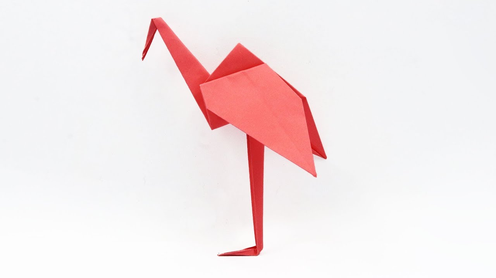

Origami Designs

Flamingo
Fun facts about flamingos
:
1. Flamingos wings range from 3.3-5 feet
2. When they eat their heads are upside down
How to make it
Elephant
Fun facts about elephants
1. They communicate through vibrations
2. Calves can walk within 20 minutes of birth
How to make it
Frog
Fun facts about frogs
1. Forgs drink water from their skin
2. A group of frogs is called an army
How to make it
Bird
Fun facts about birds
1. There are about 10000 species of birds worldwide
2. Scientists believe that birds have evolved from therepod dinosaurs
How to make it